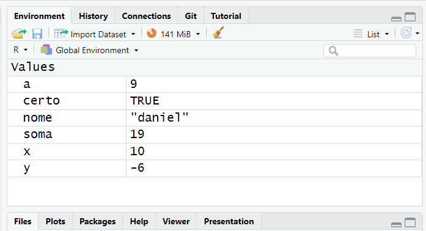
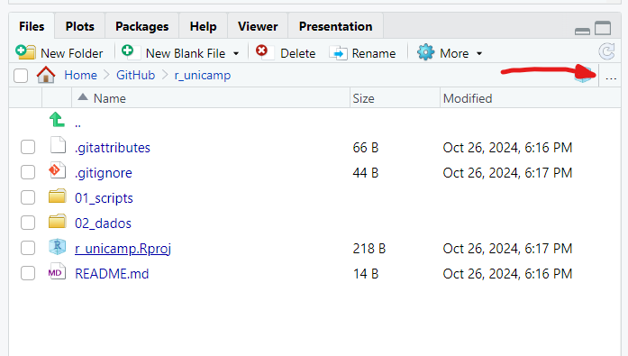
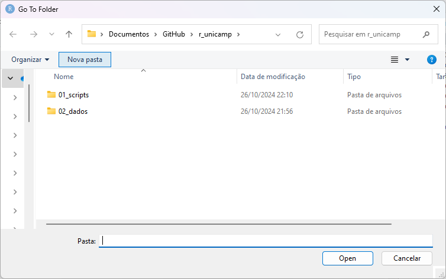
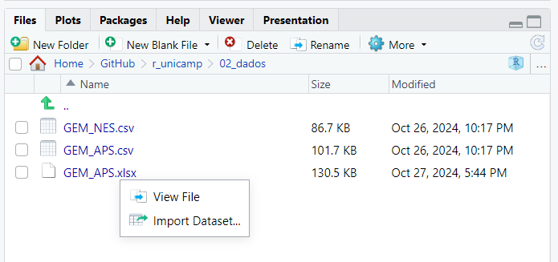
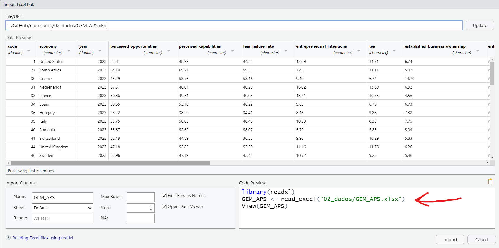

# operacoes basicas
5 + 5[1] 1010 - 6[1] 410*2[1] 205/2[1] 2.55**2[1] 25sqrt(16)[1] 4Este código possui algumas seções. A primeira delas será um nivelamento. Em sequência, teremos uma seção sobre a análise exploratória de dados usando o pacote dplyr e ggplot2. A última seção será para conduzir algumas análises de comparação de grupos.
Como qualquer linguagem de programação, o R executa instruções que são passadas. Vamos introduzir, vendo operações básicas.
# operacoes basicas
5 + 5[1] 1010 - 6[1] 410*2[1] 205/2[1] 2.55**2[1] 25sqrt(16)[1] 4Utilize parênteses para ordenar a lógica de prioridade de operações.
5*(50-45)[1] 25É comum atribuirmos valores às variáveis. Para isso, usamos o símbolo <- ou =. A atribuição é útil, pois deixa o código mais limpo e fácil de prestar manutenção.
#Atribuições
x <- 5 + 5
y <- 10 - 16
a <- 9
soma <- a + x
nome <- "daniel"
certo <- TRUEUma vez realizada a atribuição, os valores aparecem no painel do canto superior direito do RStudio (em Environment).

Você pode resgatar valores atribuídos para realizar cálculos com os valores guardados.
# como vimos no codigo acima x = 10 e a = 9
x + a[1] 19Vamos aplicar o que acabamos de aprender para criar uma calculadora de IMC.
peso_daniel <- 90
altura_daniel <- 1.78
imc_daniel <- peso_daniel/(altura_daniel)**2
imc_daniel[1] 28.4055É possível fazer o IMC de vários grupos ao mesmo tempo? Sim, para isso, vamos trabalhar com vetores. O vetor é um conjunto unidimensional de objetos de um mesmo tipo.
Traduzindo… imagina uma tabela de excel formada por várias colunas. Uma das colunas é a idade e está expressa em número. Pronto, um vetor é como se fosse uma coluna com valores de um mesmo tipo.
# trabalhando com vetores
pesos <- c(65, 95, 75, 77, 80, 68)
alturas <- c(1.60, 1.78, 1.80, 1.68, 1.72, 1.65)
imcs <- pesos/alturas**2
imcs[1] 25.39062 29.98359 23.14815 27.28175 27.04164 24.97704Vamos arrendondar usando duas casas decimais?
imcs <- round(imcs, 2)
imcs[1] 25.39 29.98 23.15 27.28 27.04 24.98As matrizes possuem uma estrutura tabular, com linhas e colunas. Porém, semelhante ao vetor, todos os objetos devem ser de um mesmo tipo (ex.: tudo número, tudo caracter).
Matriz<-cbind(pesos,alturas,imcs)
Matriz pesos alturas imcs
[1,] 65 1.60 25.39
[2,] 95 1.78 29.98
[3,] 75 1.80 23.15
[4,] 77 1.68 27.28
[5,] 80 1.72 27.04
[6,] 68 1.65 24.98O dataframe é um estrutura tabular semelhante à matriz. O maior diferencial dela é que você consegue armazenar valores de diferentes tipos (ex.: numérico, characteres, etc).
df <- as.data.frame(Matriz)
df pesos alturas imcs
1 65 1.60 25.39
2 95 1.78 29.98
3 75 1.80 23.15
4 77 1.68 27.28
5 80 1.72 27.04
6 68 1.65 24.98Quem está iniciando o uso de R frequentemente sofre um pouco com a leitura dos dados. Isso é um ponto muito crítico, pois o novo usuário pode se frustrar logo quando está dando os primeiros passos.
Aqui vou tentar explicar como é possível fazer a leitura dos dados sem muitos problemas. Isso abre uma das potencialidades do R: ler dados de múltiplos formatos.
1) O primeiro passo é localizar onde o seu arquivo está. Sugiro, fortemente, que deixe o arquivo em alguma pasta de trabalho com todos os arquivos que você vai usar.
Uma boa forma de você localizar onde está o arquivo é usando os três pontinhos conforme print abaixo.

2) Uma nova janela será aberta. Basta você navegar para achar a pasta onde seu arquivo está localizado. Eu guardei nesta pasta chamada 02_dados.

3) O próximo passo consiste em selecionar a opção “Import Dataset…” conforme o print abaixo.

4) Será aberta uma tela assistente que mostra uma prévia de como os resultados vão aparecer.

Dica de boa prática: copie o código gerado (marcado em vermelho acima), pois na próxima vez que rodar o script não precisa executar todo este passo a passo, basta executar o comando.
library(readxl)
GEM_APS <- read_excel("~/GitHub/r_unicamp/02_dados/GEM_APS.xlsx")Nesta seção vamos começar aplicar um conjunto de funções para conseguir adentrar no tratamento e análise exploratória de dados. Antes de começar, assegure que o tidyverse esteja instalado e também carregue o pacote.
# instalando o pacote
# install.packages("tidyverse")
# carregando pacote
library(tidyverse)glimpseGlimpse em inglês significa “vislumbre”, “olhada rápida”, “olhadinha”. Esta função ajuda a você conferir rapidamente alguns detalhes sobre o dataframe.
Pelos resultados, é possível ver o número de linhas (1128), colunas (18), os tipos de variáveis e as primeiras observações.
glimpse(GEM_APS)Rows: 1,128
Columns: 18
$ code <dbl> 1, 27, 30, 31, 33, 34, 36, 3…
$ economy <chr> "United States", "South Afri…
$ year <dbl> 2023, 2023, 2023, 2023, 2023…
$ perceived_opportunities <chr> "53.81", "64.10", "45.29", "…
$ perceived_capabilities <chr> "48.99", "69.21", "53.76", "…
$ fear_failure_rate <chr> "44.55", "59.51", "53.16", "…
$ entrepreneurial_intentions <chr> "12.09", "7.45", "9.10", "16…
$ tea <chr> "14.71", "11.11", "6.74", "1…
$ established_business_ownership <chr> "6.74", "5.92", "14.70", "6.…
$ entrepreneurial_employee_activity <chr> NA, NA, NA, NA, NA, NA, NA, …
$ motivational_index <chr> NA, NA, NA, NA, NA, NA, NA, …
$ female_male_TEA <chr> "0.84", "0.76", "0.79", "0.8…
$ female_male_opportunity_TEA <chr> NA, NA, NA, NA, NA, NA, NA, …
$ high_job_creation_expectation <chr> "28.80", "21.42", "12.12", "…
$ innovation <chr> NA, NA, NA, NA, NA, NA, NA, …
$ business_services_sector <chr> "20.42", "3.57", "22.53", "2…
$ high_status_successful_entrepreneurs <chr> "78.94", "85.51", "69.76", N…
$ entrepreneurship_as_good_carrer_of_choice <chr> "79.21", "78.46", "72.90", N…selectEsta função permite você selecionar apenas as variáveis (colunas) que são do seu interesse no dataframe.
No código abaixo, vamos selecionar apenas as variáveis com o nome do país, o ano e a variável Total early-stage entrepreneurial activity (TEA). Em sequência, vamos guardar o resultado da seleção em um novo objeto.
# selecionando apenas as variveis pais, ano, tea
GEM_APS_select <-
GEM_APS |>
select(economy, year, tea)
# a funcao head() imprime apenas as seis primeiras observacoes
GEM_APS_select |>
head()# A tibble: 6 × 3
economy year tea
<chr> <dbl> <chr>
1 United States 2023 14.71
2 South Africa 2023 11.11
3 Greece 2023 6.74
4 Netherlands 2023 13.69
5 France 2023 10.75
6 Spain 2023 6.79 |> se chama pipe. Ele é um elemento muito comum na estrutura do tidyverse. O que ele significa? Ele é artifício para encadear funções no R. Com o passar do seu uso ficará mais claro. O atalho para o pipe é Ctrl + Shift + M.filterEsta função serve para filtrar apenas observações (linhas) de acordo com um critério.
Vamos supor que eu queira pegar apenas as observações do Brasil.
GEM_APS |>
filter(economy == 'Brazil')# A tibble: 23 × 18
code economy year perceived_opportunities perceived_capabilities
<dbl> <chr> <dbl> <chr> <chr>
1 55 Brazil 2023 65.37 65.89
2 55 Brazil 2022 67.87 69.16
3 55 Brazil 2021 54.80 66.72
4 55 Brazil 2020 57.30 67.80
5 55 Brazil 2019 46.37 61.99
6 55 Brazil 2018 31.43 54.27
7 55 Brazil 2017 46.42 55.89
8 55 Brazil 2016 40.23 53.57
9 55 Brazil 2015 42.38 58.27
10 55 Brazil 2014 55.54 49.96
# ℹ 13 more rows
# ℹ 13 more variables: fear_failure_rate <chr>,
# entrepreneurial_intentions <chr>, tea <chr>,
# established_business_ownership <chr>,
# entrepreneurial_employee_activity <chr>, motivational_index <chr>,
# female_male_TEA <chr>, female_male_opportunity_TEA <chr>,
# high_job_creation_expectation <chr>, innovation <chr>, …Vamos supor que eu queira pegar observações do Brasil ou Argentina. Para isso, vamos usar o conector ou (simbolizado por |). Vou aproveitar e colocar para ordenar pela coluna ano (year) usando a função arrange.
GEM_APS |>
filter(economy == 'Brazil' |
economy == 'Argentina') |>
arrange(year)# A tibble: 41 × 18
code economy year perceived_opportunities perceived_capabilities
<dbl> <chr> <dbl> <chr> <chr>
1 54 Argentina 2001 19.83 54.80
2 55 Brazil 2001 40.60 54.28
3 54 Argentina 2002 20.67 66.83
4 55 Brazil 2002 41.42 54.97
5 54 Argentina 2003 65.10 62.83
6 55 Brazil 2003 41.43 50.83
7 54 Argentina 2004 56.64 58.58
8 55 Brazil 2004 43.84 55.66
9 54 Argentina 2005 57.51 55.12
10 55 Brazil 2005 42.71 50.23
# ℹ 31 more rows
# ℹ 13 more variables: fear_failure_rate <chr>,
# entrepreneurial_intentions <chr>, tea <chr>,
# established_business_ownership <chr>,
# entrepreneurial_employee_activity <chr>, motivational_index <chr>,
# female_male_TEA <chr>, female_male_opportunity_TEA <chr>,
# high_job_creation_expectation <chr>, innovation <chr>, …Vamos supor que eu queira agora pegar os dados de Brasil e Argentina, mas eu queira pegar apenas observações 2010 adiante. Agora vamos ter que usar também o conector and’, simbolizado por &.
GEM_APS |>
filter((economy == 'Brazil' |
economy == 'Argentina') & year >= 2010)# A tibble: 23 × 18
code economy year perceived_opportunities perceived_capabilities
<dbl> <chr> <dbl> <chr> <chr>
1 55 Brazil 2023 65.37 65.89
2 55 Brazil 2022 67.87 69.16
3 55 Brazil 2021 54.80 66.72
4 55 Brazil 2020 57.30 67.80
5 55 Brazil 2019 46.37 61.99
6 54 Argentina 2018 35.89 48.79
7 55 Brazil 2018 31.43 54.27
8 54 Argentina 2017 29.65 43.08
9 55 Brazil 2017 46.42 55.89
10 54 Argentina 2016 44.29 61.16
# ℹ 13 more rows
# ℹ 13 more variables: fear_failure_rate <chr>,
# entrepreneurial_intentions <chr>, tea <chr>,
# established_business_ownership <chr>,
# entrepreneurial_employee_activity <chr>, motivational_index <chr>,
# female_male_TEA <chr>, female_male_opportunity_TEA <chr>,
# high_job_creation_expectation <chr>, innovation <chr>, …mutateA função mutate é útil para a criação de variáveis. Vamos fazer um exercício com a variável female_male_TEA, multiplicando-a por 100 para deixar na lógica percentual.
Mas se notar, esta variável está como char (qualitativo), mas tem que estar como numérico. Veja a seguir.
# funcao class serve para verificar o tipo da variavel
class(GEM_APS$female_male_TEA)[1] "character"Como converter?
GEM_APS$female_male_TEA <- as.double(GEM_APS$female_male_TEA)
class(GEM_APS$female_male_TEA)[1] "numeric"Agora é possível usar a função mutate.
GEM_APS |>
mutate(perc_fem_male_TEA = female_male_TEA * 100) |>
select(year, economy, perc_fem_male_TEA) # A tibble: 1,128 × 3
year economy perc_fem_male_TEA
<dbl> <chr> <dbl>
1 2023 United States 84
2 2023 South Africa 76
3 2023 Greece 79
4 2023 Netherlands 80
5 2023 France 72
6 2023 Spain 81
7 2023 Hungary 56
8 2023 Italy 61
9 2023 Romania 71
10 2023 Switzerland 90
# ℹ 1,118 more rowsgroup_by e summariseAs funções group_by e summarise são geralmente aplicadas em conjunto. A primeira realiza algum agrupamento e a segunda realiza uma sumarização dos dados.
Para exemplificar, vamos pegar dados de 2023 para países da América do Sul e América do Norte. Já vimos como fazer isso usando a função filter.
# estes sao os paises
americas <- c("Brazil","Chile","Uruguay","Colombia","Canada",
"Ecuador","Mexico","United States","Venezuela")
# primeiro vamos filtrar o ano de 2023 e depois filtramos aqueles paises que estao no vetor chamado americas
GEM23_americas <-
GEM_APS |>
filter(year == 2023) |>
filter(economy %in% americas)
GEM23_americas# A tibble: 9 × 18
code economy year perceived_opportunities perceived_capabilities
<dbl> <chr> <dbl> <chr> <chr>
1 1 United States 2023 53.81 48.99
2 52 Mexico 2023 61.52 69.19
3 55 Brazil 2023 65.37 65.89
4 56 Chile 2023 59.42 75.67
5 57 Colombia 2023 59.96 72.24
6 58 Venezuela 2023 65.83 84.07
7 101 Canada 2023 62.57 56.66
8 593 Ecuador 2023 54.28 75.15
9 598 Uruguay 2023 58.26 69.83
# ℹ 13 more variables: fear_failure_rate <chr>,
# entrepreneurial_intentions <chr>, tea <chr>,
# established_business_ownership <chr>,
# entrepreneurial_employee_activity <chr>, motivational_index <chr>,
# female_male_TEA <dbl>, female_male_opportunity_TEA <chr>,
# high_job_creation_expectation <chr>, innovation <chr>,
# business_services_sector <chr>, …O próximo passo é fazer um tratamento para criar uma variável nova que será usada para identificar se é país da América do Norte ou Sul. Para isso, vamos usar a função mutate.
# usando um if_else verificamos se o nome do pais e Mexico OU Canada OU United States. Caso verdadeiro, atribui-se o valor de 'Norte', caso contrario, atribui-se o valor de Sul a variável hemisferio, que devera vir depois (.after) da variavel economy
GEM23_americas <-
GEM23_americas |>
mutate(hemisferio = if_else(economy == 'Mexico'|
economy == 'Canada'|
economy == 'United States',
'Norte',
'Sul'), .after = economy)
GEM23_americas# A tibble: 9 × 19
code economy hemisferio year perceived_opportunit…¹ perceived_capabilities
<dbl> <chr> <chr> <dbl> <chr> <chr>
1 1 United S… Norte 2023 53.81 48.99
2 52 Mexico Norte 2023 61.52 69.19
3 55 Brazil Sul 2023 65.37 65.89
4 56 Chile Sul 2023 59.42 75.67
5 57 Colombia Sul 2023 59.96 72.24
6 58 Venezuela Sul 2023 65.83 84.07
7 101 Canada Norte 2023 62.57 56.66
8 593 Ecuador Sul 2023 54.28 75.15
9 598 Uruguay Sul 2023 58.26 69.83
# ℹ abbreviated name: ¹perceived_opportunities
# ℹ 13 more variables: fear_failure_rate <chr>,
# entrepreneurial_intentions <chr>, tea <chr>,
# established_business_ownership <chr>,
# entrepreneurial_employee_activity <chr>, motivational_index <chr>,
# female_male_TEA <dbl>, female_male_opportunity_TEA <chr>,
# high_job_creation_expectation <chr>, innovation <chr>, …Agora sim vamos aplicar o group_by e summarise. Vamos agrupar pelo hemisfério e verificar a media da variavel female_male_TEA.
GEM23_americas |>
group_by(hemisferio) |>
summarise(media_fmt = mean(female_male_TEA))# A tibble: 2 × 2
hemisferio media_fmt
<chr> <dbl>
1 Norte 0.793
2 Sul 0.933Nota-se, portanto, que há um maior equilíbrio que empreendedoras e empreendedores no hemisfério sul da américa.